3 City-level pollen phenology
![Approach for detecting pollen phenology from remotely-sensed leafing phenology. Enhanced vegetation index (EVI) time series of individual trees are used to determine green-up/down days at various green-up/down thresholds. The green-up/down days were then summarized to the site level as green-up/down frequencies. The green-up/down frequencies were compared with time series of pollen count (squareroot-transformed). For each taxa and across all sites, the green-up/down threshold that lead to the best match in the shapes of leafing and pollen phenology curves was chosen. For each site specifically, the best lag between leafing and pollen phenology curves were chosen.](RS4flower_files/figure-html/unnamed-chunk-52-1.png)
Figure 3.1: Approach for detecting pollen phenology from remotely-sensed leafing phenology. Enhanced vegetation index (EVI) time series of individual trees are used to determine green-up/down days at various green-up/down thresholds. The green-up/down days were then summarized to the site level as green-up/down frequencies. The green-up/down frequencies were compared with time series of pollen count (squareroot-transformed). For each taxa and across all sites, the green-up/down threshold that lead to the best match in the shapes of leafing and pollen phenology curves was chosen. For each site specifically, the best lag between leafing and pollen phenology curves were chosen.
3.1 NAB data
NAB data were used to calibrate and validate city-level pollen phenology.
Read in data using tidynab package.
Focus on seven major cities in CONUS with pollen count data and street tree inventory.
Exceptions: Denver pollen data are from Colorado Springs; Austin pollen data are from Georgetown; Detroit pollen data are from Sylvania.
v_site <- c("NY", "AT", "ST", "HT", "TP", "DT", "DV")
v_site_name <- c("New York", "Austin", "Seattle", "Houston", "Tampa", "Detroit", "Denver")
v_site_tune <- c("NY", "AT", "ST", "HT", "TP", "DT", "DV")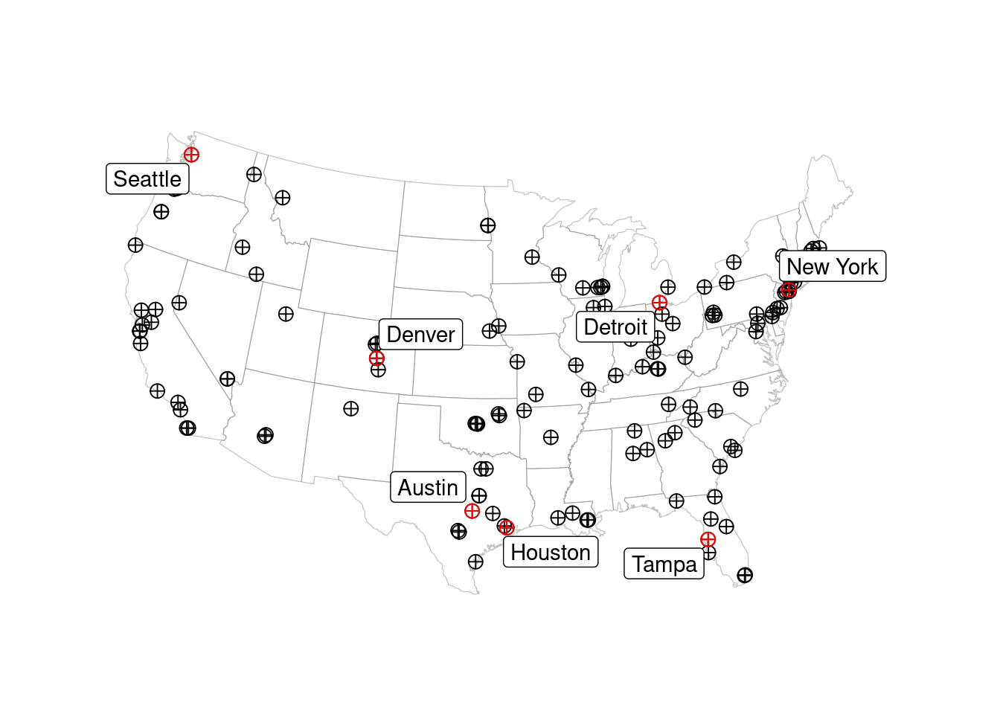
Retrieve climatologies (long-term climate) of these cities from TerraClim.
## # A tibble: 7 × 3
## site mat tap
## <chr> <dbl> <dbl>
## 1 AT 19.4 842.
## 2 DV 9.25 424
## 3 ST 10.9 1011
## 4 HT 21.3 1249.
## 5 NY 12.3 1198.
## 6 DT 10.2 869.
## 7 TP 22.6 1298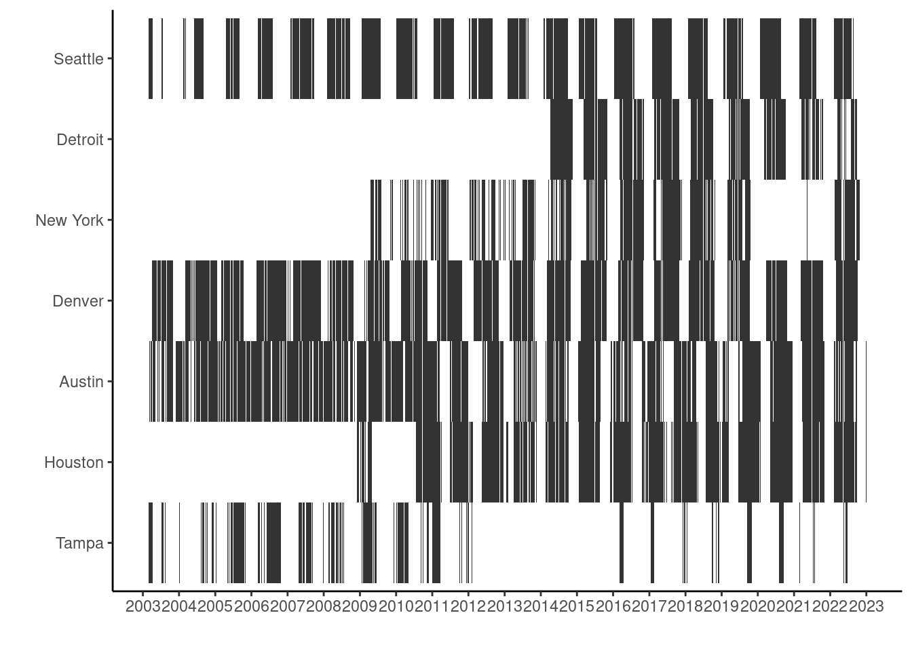
View pollen phenology in study sites.
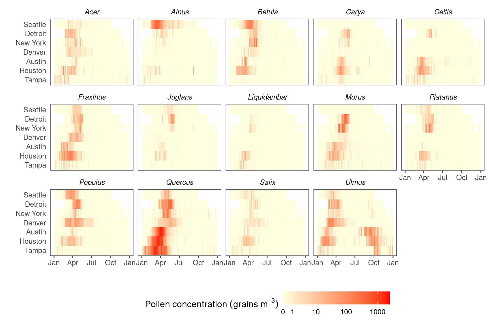
Estimate genus-specific pollen seasons by fitting Gaussian kernels.
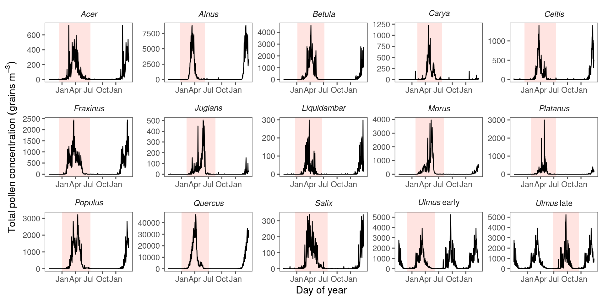
3.2 NPN data
NPN data were used in addition to NAB data to validate city-level pollen phenology.
Download all NPN data for taxa studied.
Visualize NPN data and visualize.
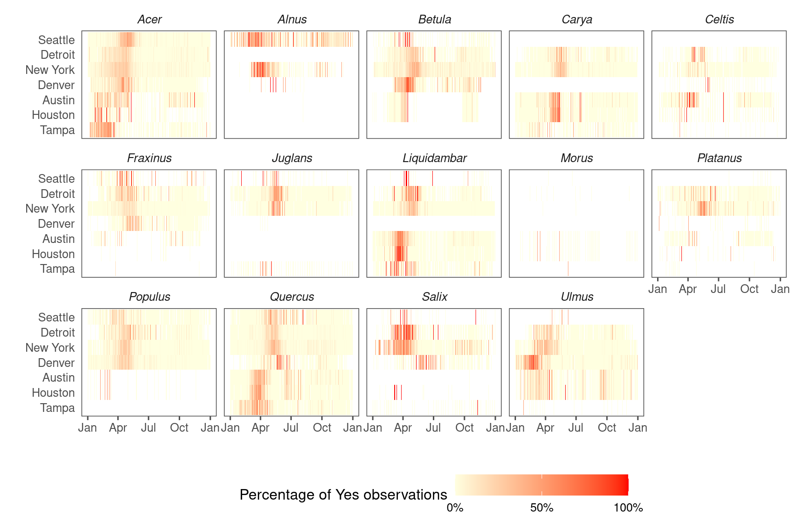
3.3 Street tree inventory data
Street tree inventory data from seven cities were compiled to locate pixels of interest for PlanetScope data retrieval.
Read in data previously processed with batchplanet package.
Find family names from genus names. This step needs supervision when run for the first time.
Map relative position of tree inventory and nab station.
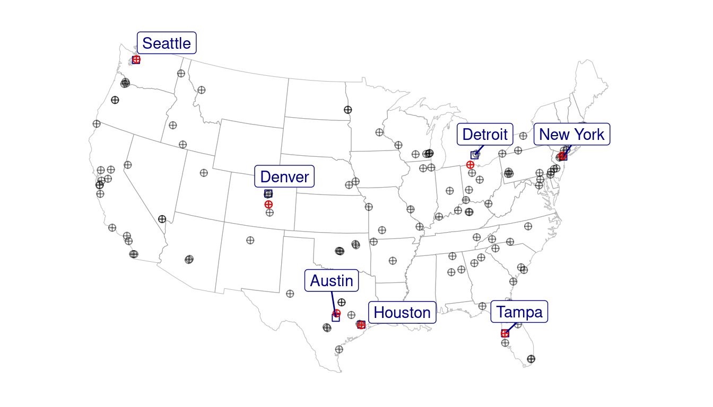
Calculate distance from plants to NAB stations in the unit of km.
## # A tibble: 7 × 7
## site midlon midlat sitelon sitelat sitename distance
## <chr> <dbl> <dbl> <dbl> <dbl> <chr> <dbl>
## 1 AT -97.7 30.3 -97.7 30.6 Austin 40.9
## 2 DT -83.1 42.4 -83.7 41.7 Detroit 90.7
## 3 DV -105. 39.7 -105. 38.9 Denver 96.5
## 4 HT -95.4 29.7 -95.4 29.7 Houston 4.28
## 5 NY -73.9 40.7 -74.0 40.8 New York 11.1
## 6 ST -122. 47.6 -122. 47.7 Seattle 7.07
## 7 TP -82.4 28.1 -82.4 28.1 Tampa 3.65Prepare street map as basemap. Street shapefiles for major cities manually downloaded from https://dataverse.harvard.edu/dataset.xhtml?persistentId=doi:10.7910/DVN/CUWWYJ. Boeing, Geoff, 2017, “U.S. Street Network Shapefiles, Node/Edge Lists, and GraphML Files”, https://doi.org/10.7910/DVN/CUWWYJ, Harvard Dataverse, V2
Map plant occurrence in a city.
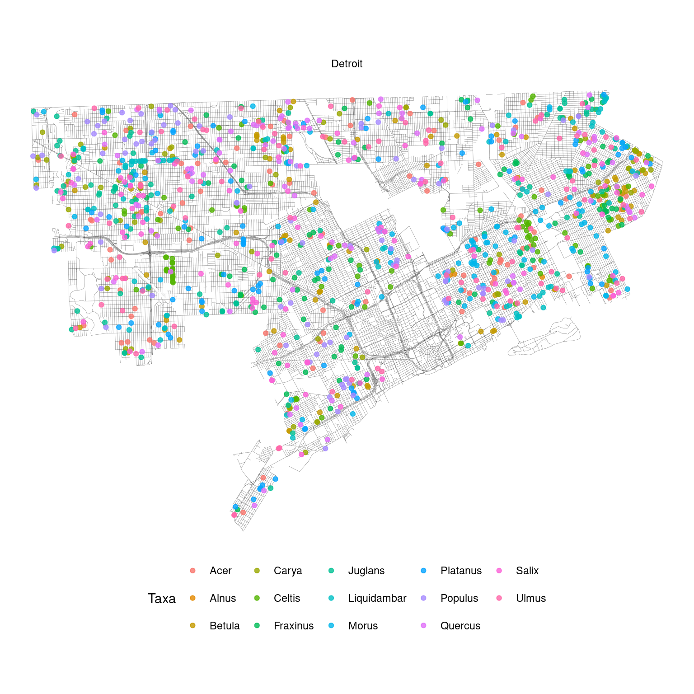
3.4 PlanetScope data
PlanetScope data were previously processed using batchplanet package.
Here we visualize a subset of street trees in Detroit overlayed on a true-color PlanetScope image on May 8, 2017.
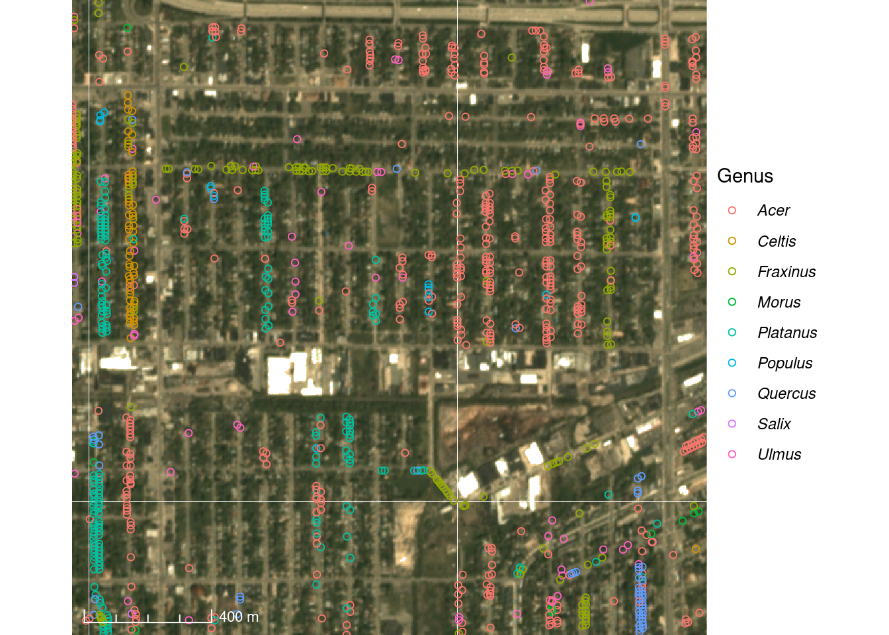
![Pollen count and plant occurrence data. (A) Map of pollen counting stations associated with the National Allergy Bureau (NAB) and plant records near selected pollen counting stations. All pollen counting stations are marked in crossed circles, with ten selected stations in this study highlighted in red. Plant occurrence data from street tree inventory, land cover classification, and crowdsourcing are marked in blue points. (B) Pollen phenology of eleven key pollen-producing taxa in ten selected stations. (C) Spatial distribution of pollen-producing plants at ten study sites. Basemap show streets in cities. For simplicity, random 200 plants are visualized for each site.](RS4flower_files/figure-html/unnamed-chunk-69-1.png)
Figure 3.2: Pollen count and plant occurrence data. (A) Map of pollen counting stations associated with the National Allergy Bureau (NAB) and plant records near selected pollen counting stations. All pollen counting stations are marked in crossed circles, with ten selected stations in this study highlighted in red. Plant occurrence data from street tree inventory, land cover classification, and crowdsourcing are marked in blue points. (B) Pollen phenology of eleven key pollen-producing taxa in ten selected stations. (C) Spatial distribution of pollen-producing plants at ten study sites. Basemap show streets in cities. For simplicity, random 200 plants are visualized for each site.
3.5 Characterize phenology
Set green-up/down thresholds for each taxa.
Read in green-up down day of year previously processed using the batchplanet package.
Convert into probability density.
Process NAB and NPN data into probability density representing city-level flowering and pollen phenology, respectively.
3.6 Tune parameters
Prepare some functions for plotting.
Tune green-up/down threshold and leaf-flower lag with NAB data.
3.7 Visualize predictions
Prepare for Shiny app by copying result figures to the current folder. Shiny app code is in ./shinyapp/app.R. Needs to deploy app once every time results are changed.
Display results in our Shiny app.
Make some summary plots.
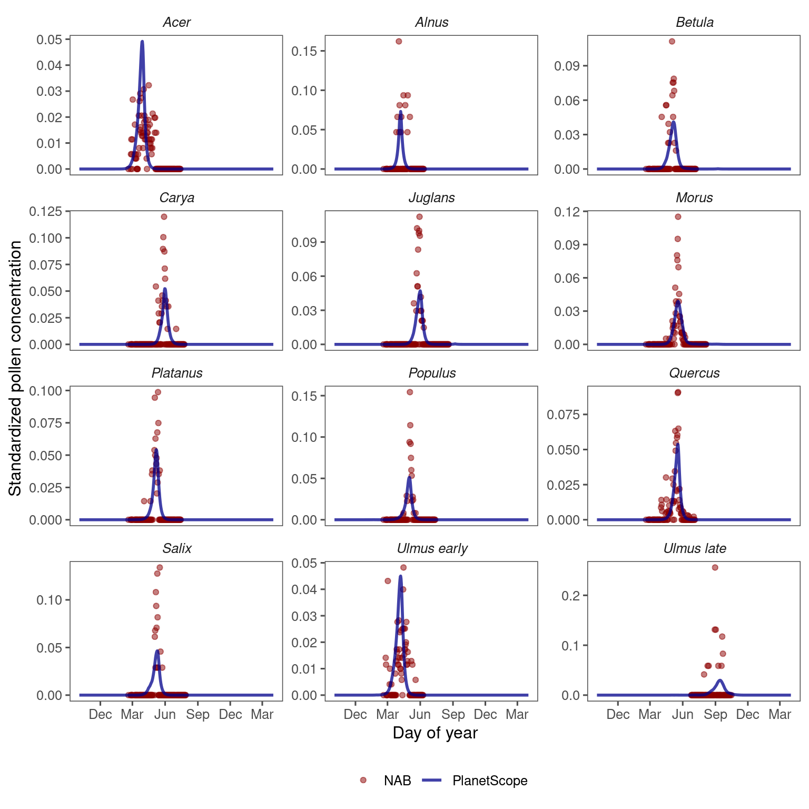
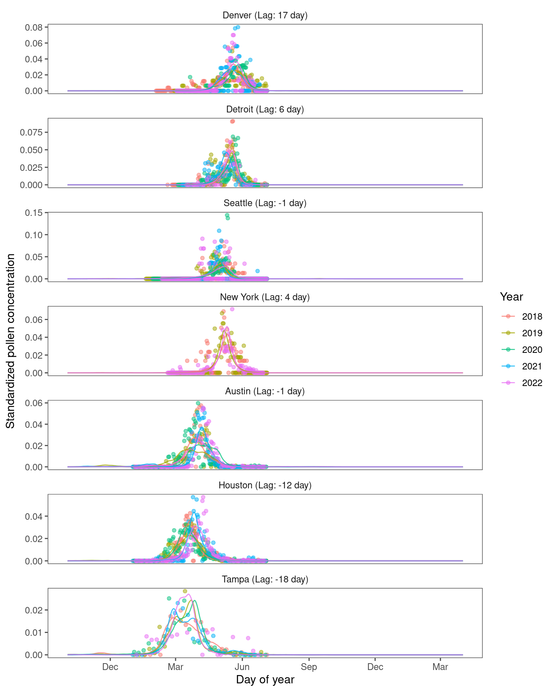
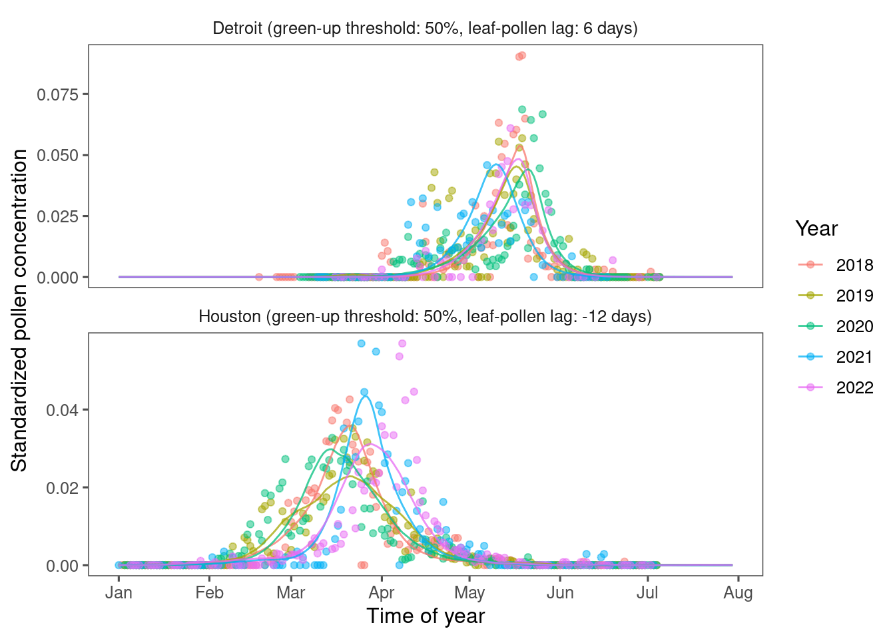
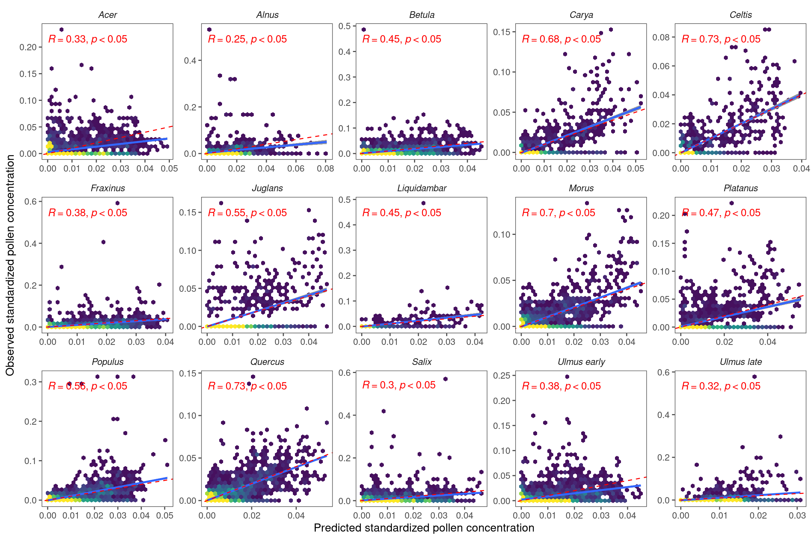
3.8 Cross validation
Plot correlation between mean annual temperature (MAT) and lag between green-up/down frequency and pollen count. * A positive lag means leafing phenology leads pollen phenology; a negative lag means leafing phenology lags pollen phenology.
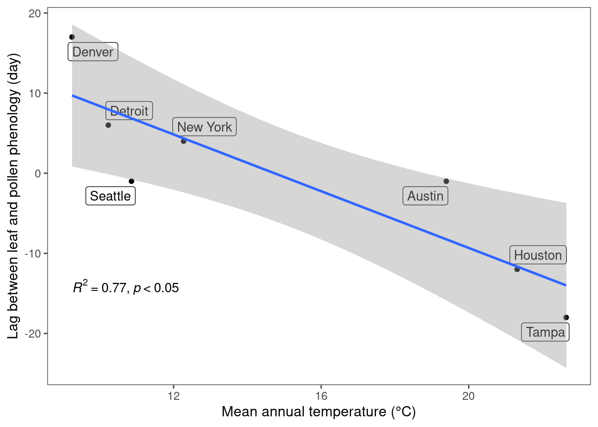
* At warmer places, oak pollen tend to precede 50% green-up and vice versa.Linear regression to check significance of the correlation.
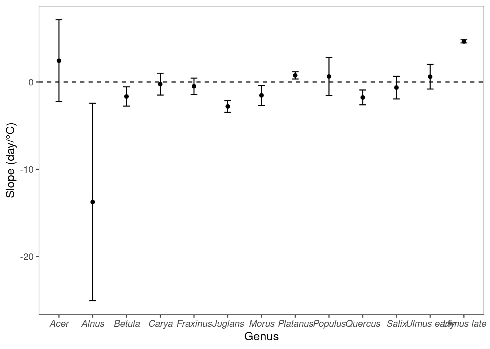
We conducted leave-one-out cross validation to test the robustness of the climate-phenology relationship and the effectiveness of using it to infer flowering phenology in new locations. Specifically, we removed a random city from the pollen dataset at a time, matched leafing and pollen phenology in the other cities, and modeled the climate-lag correlation. We predicted the leafing-phenology lag with the linear model and subsequently predicted the flowering phenology from known leafing phenology at the city held for validation. We evaluated the accuracy of our methods by calculating the RMSE between the predicted flowering phenology and standardized pollen count observations at the cities held for validation.
3.9 Evaluate performance
Comparing nRMSE.
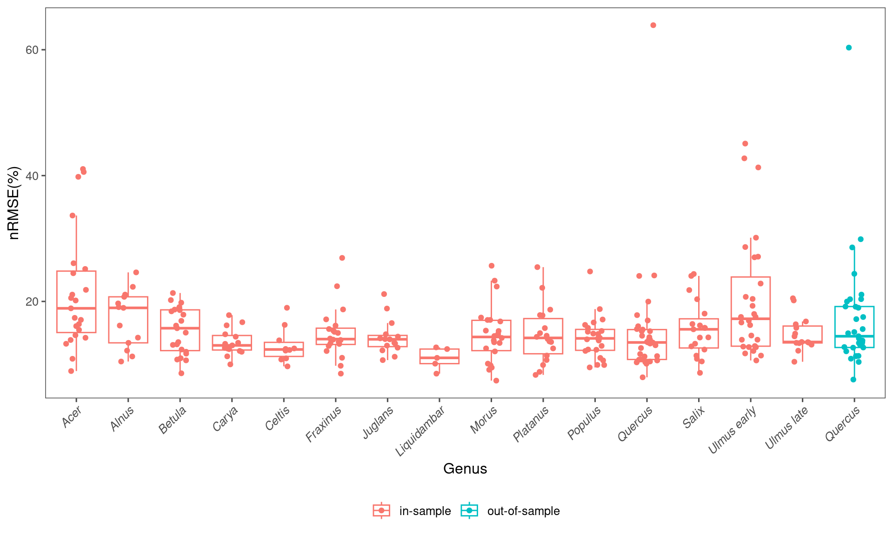
## # A tibble: 2 × 6
## method median mean lower upper n
## <fct> <dbl> <dbl> <dbl> <dbl> <int>
## 1 in-sample 0.142 0.159 0.0881 0.336 282
## 2 out-of-sample 0.145 0.173 0.0982 0.360 33## # A tibble: 15 × 6
## taxa median mean lower upper n
## <chr> <dbl> <dbl> <dbl> <dbl> <int>
## 1 Alnus 0.190 0.172 0.107 0.239 13
## 2 Acer 0.189 0.214 0.100 0.408 23
## 3 Ulmus early 0.172 0.203 0.111 0.435 28
## 4 Betula 0.157 0.154 0.0971 0.207 23
## 5 Salix 0.156 0.156 0.0947 0.242 19
## 6 Morus 0.144 0.148 0.0832 0.244 22
## 7 Platanus 0.142 0.147 0.0853 0.241 18
## 8 Populus 0.141 0.142 0.0972 0.215 23
## 9 Fraxinus 0.140 0.149 0.0912 0.248 20
## 10 Juglans 0.140 0.143 0.109 0.204 15
## 11 Ulmus late 0.136 0.148 0.110 0.204 15
## 12 Quercus 0.135 0.154 0.0967 0.321 33
## 13 Carya 0.130 0.135 0.104 0.174 15
## 14 Celtis 0.124 0.130 0.0993 0.184 10
## 15 Liquidambar 0.110 0.110 0.0868 0.127 5Comparing Spearman correlation coeffiient.
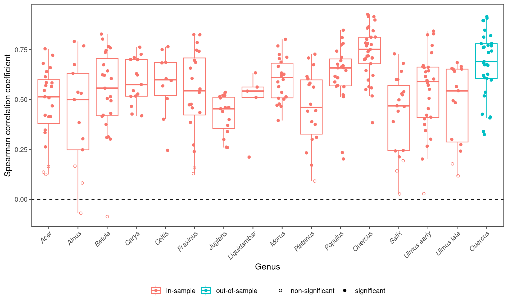
## # A tibble: 2 × 6
## method median mean lower upper n
## <fct> <dbl> <dbl> <dbl> <dbl> <int>
## 1 in-sample 0.567 0.544 0.125 0.845 282
## 2 out-of-sample 0.691 0.679 0.337 0.910 33## # A tibble: 3 × 3
## # Groups: method [2]
## method sig n
## <fct> <chr> <int>
## 1 in-sample non-significant 16
## 2 in-sample significant 266
## 3 out-of-sample significant 33## # A tibble: 15 × 6
## taxa median mean lower upper n
## <chr> <dbl> <dbl> <dbl> <dbl> <int>
## 1 Quercus 0.751 0.733 0.491 0.918 33
## 2 Populus 0.659 0.623 0.220 0.827 23
## 3 Morus 0.610 0.600 0.432 0.784 22
## 4 Celtis 0.599 0.580 0.280 0.761 10
## 5 Ulmus early 0.590 0.542 0.145 0.834 28
## 6 Carya 0.575 0.590 0.421 0.750 15
## 7 Betula 0.557 0.537 0.127 0.814 23
## 8 Fraxinus 0.544 0.534 0.142 0.825 20
## 9 Ulmus late 0.544 0.477 0.138 0.678 15
## 10 Liquidambar 0.542 0.492 0.241 0.627 5
## 11 Acer 0.514 0.479 0.131 0.736 23
## 12 Alnus 0.500 0.427 -0.0246 0.785 13
## 13 Salix 0.468 0.430 0.0784 0.708 19
## 14 Platanus 0.460 0.460 0.125 0.719 18
## 15 Juglans 0.454 0.423 0.260 0.531 15Validate with NPN instead of NAB.
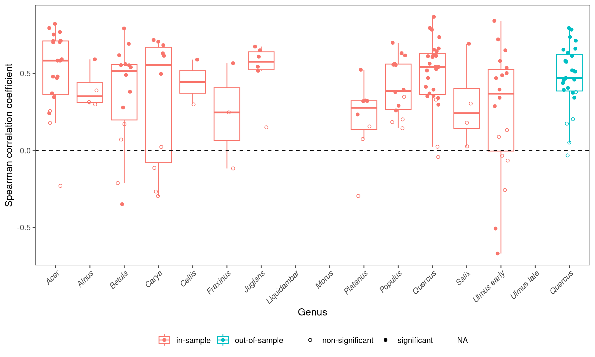
## # A tibble: 2 × 6
## method median mean lower upper n
## <fct> <dbl> <dbl> <dbl> <dbl> <int>
## 1 in-sample 0.479 0.398 -0.297 0.795 130
## 2 out-of-sample 0.470 0.476 0.0214 0.788 27## # A tibble: 6 × 3
## # Groups: method [2]
## method sig_npn n
## <fct> <chr> <int>
## 1 in-sample non-significant 35
## 2 in-sample significant 95
## 3 in-sample <NA> 152
## 4 out-of-sample non-significant 5
## 5 out-of-sample significant 22
## 6 out-of-sample <NA> 6## # A tibble: 12 × 6
## taxa median mean lower upper n
## <chr> <dbl> <dbl> <dbl> <dbl> <int>
## 1 Acer 0.583 0.515 -0.0364 0.809 20
## 2 Juglans 0.576 0.524 0.195 0.671 6
## 3 Carya 0.556 0.319 -0.291 0.714 10
## 4 Quercus 0.542 0.503 0.0000180 0.820 27
## 5 Betula 0.515 0.367 -0.305 0.759 14
## 6 Celtis 0.444 0.444 0.306 0.582 2
## 7 Populus 0.387 0.415 0.156 0.677 14
## 8 Ulmus early 0.368 0.249 -0.601 0.790 18
## 9 Alnus 0.352 0.398 0.300 0.576 4
## 10 Platanus 0.276 0.207 -0.232 0.489 8
## 11 Fraxinus 0.246 0.232 -0.0995 0.550 3
## 12 Salix 0.242 0.300 0.0371 0.664 4![Comparing remotely-sensed pollen phenology from PlanetScope and site-level pollen phenology from aerial sampling. (A) Pollen phenology inferred from remotely-sensed leafing phenology tuned to the optimal green-up/down thresholds and leafing-pollen lags (lines) compared to pollen phenology inferred from airborne pollen concentration (points). Pollen phenology from both data sources was converted to probability density within each site year for comparison. Here we show examples of oak (_Quercus_ spp.) pollen phenology at two sites on the south (Houston) and north (Detroit) of CONUS. (B) Accuracy of inferring pollen phenology across taxa measured with Spearman correlation coefficient, in-sample (fitting model with data from all sites) and out-of-sample (leave-one-out cross-validation).](RS4flower_files/figure-html/unnamed-chunk-90-1.png)
Figure 3.3: Comparing remotely-sensed pollen phenology from PlanetScope and site-level pollen phenology from aerial sampling. (A) Pollen phenology inferred from remotely-sensed leafing phenology tuned to the optimal green-up/down thresholds and leafing-pollen lags (lines) compared to pollen phenology inferred from airborne pollen concentration (points). Pollen phenology from both data sources was converted to probability density within each site year for comparison. Here we show examples of oak (Quercus spp.) pollen phenology at two sites on the south (Houston) and north (Detroit) of CONUS. (B) Accuracy of inferring pollen phenology across taxa measured with Spearman correlation coefficient, in-sample (fitting model with data from all sites) and out-of-sample (leave-one-out cross-validation).